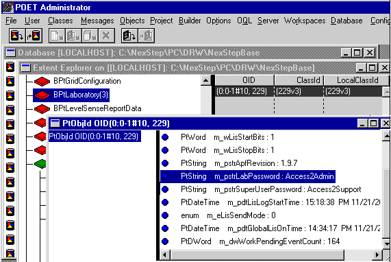
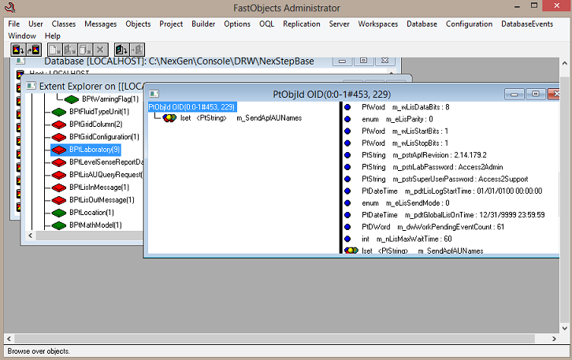

This procedure describes how to identify and repair the user password for the user interface in DxI systems.
Note: The user interface passwords are case-sensitive.
Table 121: User interface passwords
Passwords (Case-sensitive)
Intended User
Where Used
Access2Admin (default value on new system)
Note: If this password is changed to Access2Support, the user cannot change it to any other value.
Lab personnel
Delete test results.
Delete QC points.
Delete calibrators.
Perform PC backup functions.
Exit the UI when necessary.
Access2Support
Note: The user cannot change this password.
Beckman Coulter personnel
Same as above.
Password screen to determine customer password.
Identify the user password.
On the user interface Main Menu, select
Configure > System Setup > Password Setup.
Enter
Access2Support as the current password, and then press the
[Tab] key.
The system displays the current user password.
Close the dialog box, and enter the current user password so that it can be changed.
Note: If the user password has been changed to Access2Support, it cannot be changed using the user interface. The password must be edited in the database. Proceed to repairing the user password step.
Repair the user password.
For Windows XP console PC with DxI Software 5.2 and below or Access2 Software 3.4.2 and below:
Exit the user interface. Press
[Alt] + [F4] and enter the password
Access2Support.
In the Open Database window, enter
LOCALHOST as the host and
NexStepBase as the database, and then select
OK.
Note: NexStepBase is case-sensitive.
Select
Objects > Browse Extent.
Scroll down and select
BPtLaboratory.
Double-click on the line of black test in the OID column (right side of screen) to open the object information window.
Locate and highlight the
m_pstrLabPassword entry on the right side of the object information window.
Right-click on
m_pstrLabPassword and select
Edit.
Change the password to
Access2Admin and select
OK.

Highlight the
PtObjId OID line at the top left corner of the window.
Right-click on the
PtObjId OID line and select
Store .
Close the POET window, and restart the user interface.
Start > Programs> NexGen or Access2 > NexGenUI UD or Access2
For Windows 8 Mini PC with DxI Software 5.3.1 and above or Access2 Software 3.4.3 and above:
Note: DxI Software 5.3.1 and Access2 Software 3.4.3 are compatible with Windows XP console PC. If either software was installed on the Windows XP console PC, then follow the Windows XP section to launch Fast database application. Poet database application is replaced by Fast database application.
Exit the user interface. Press
[Alt] + [F4] and enter the password
Access2Support.
Press
Windows key, select
Fast Developer or
Fast Administrator icon or type
developer or
administrator and open the program.
In Fast browser, select File > Open Database.
In the Host field, enter
LOCALHOST. In the Database field, enter
NexStepBase. Select
OK.
Note: NexStepBase is case-sensitive.
Select
Objects > Browse Extent.
Scroll down and select
BPtLaboratory.
Double-click on the line of black test in the OID column (right side of screen) to open the object information window.
Locate and highlight the
m_pstrLabPassword entry on the right side of the object information window.
Right-click on
m_pstrLabPassword and select
Edit.
Change the password to
Access2Admin and select
OK.

Highlight the
PtObjId OID line at the top left corner of the window.
Right-click on the
PtObjId OID line and select
Store .
Close the Fast window, and restart the user interface.
Double click on the
NexGen Application or
NexStep Application shortcut on desktop, or press
Windows key, select
NexGenUI UD or
NexStepUI UD icon.
 Note: NexStepBase is case-sensitive.
Note: NexStepBase is case-sensitive. Note: NexStepBase is case-sensitive.
Note: NexStepBase is case-sensitive.